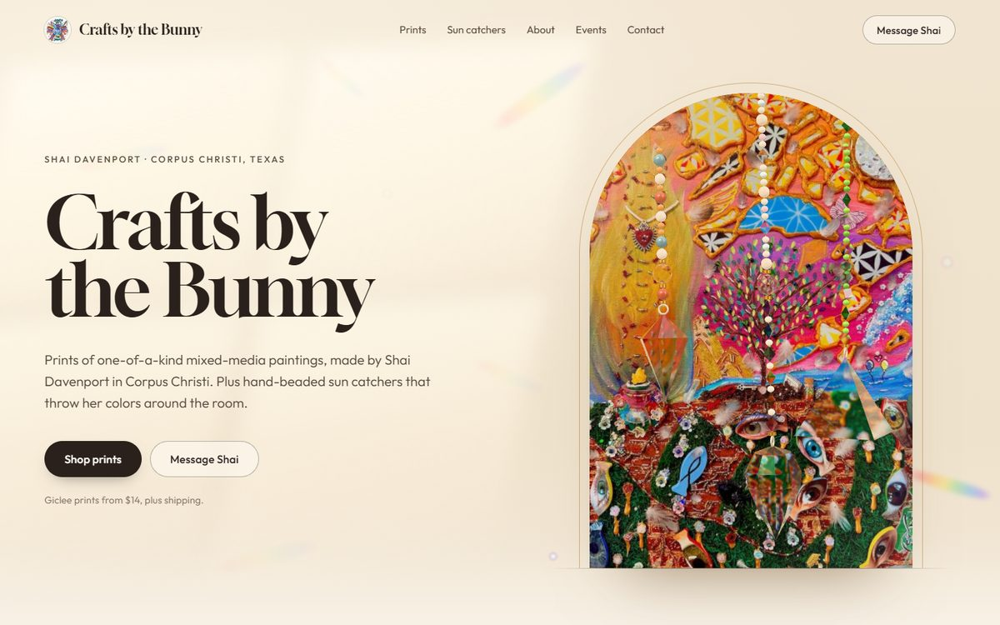
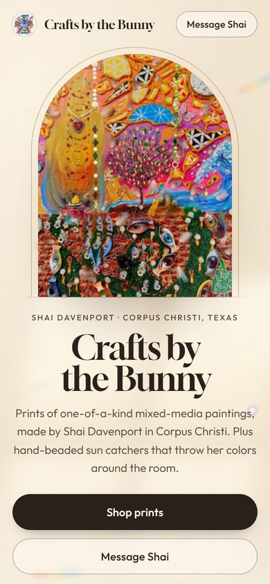
3D
Light Through Glass
Faceted crystal pendants like her sun catchers turn in the hero and refract her painting. Rainbow light flecks drift down the page. Light, airy, window-light warm.
Open the mockupSix ways to put Shai's art at the center of her site. Same content and the same real prices in every one; only the idea changes. Open each on your phone too. Internal, not for Shai yet.


Faceted crystal pendants like her sun catchers turn in the hero and refract her painting. Rainbow light flecks drift down the page. Light, airy, window-light warm.
Open the mockup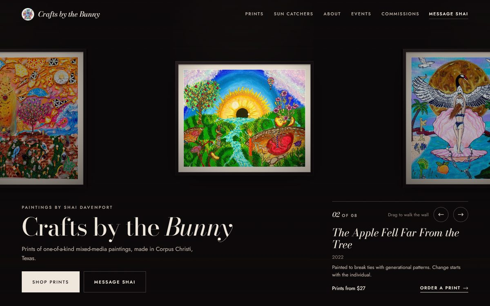
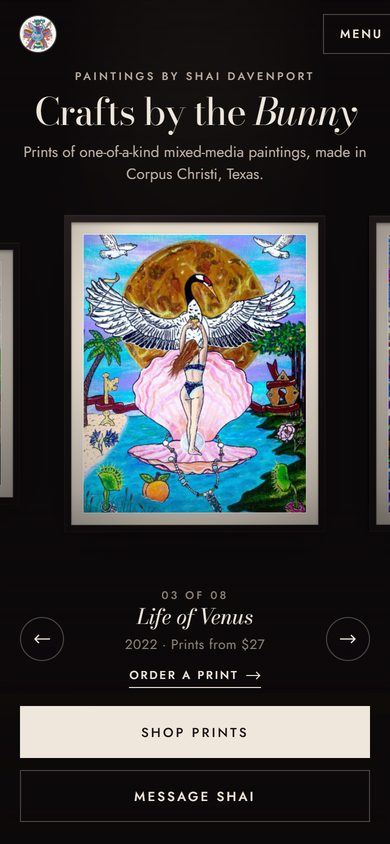
A real 3D gallery wall. Her paintings hang framed at true proportions under spotlights; drag or swipe to walk from piece to piece. Dark, museum quiet.
Open the mockup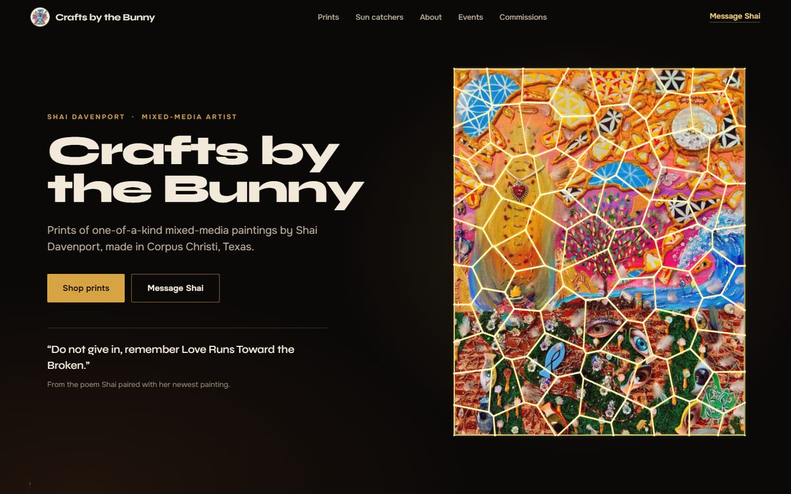
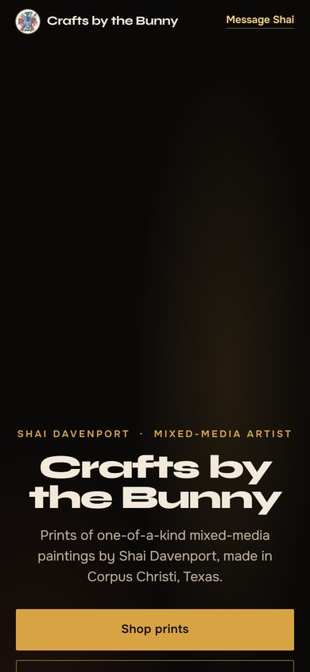
Her newest painting shatters into gold-seamed shards that pull together into the whole piece and part around your cursor. Built on her own title and her gold mosaic style.
Open the mockup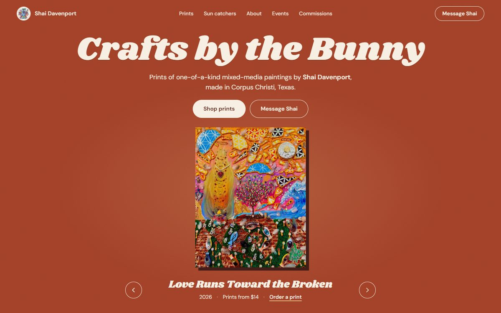
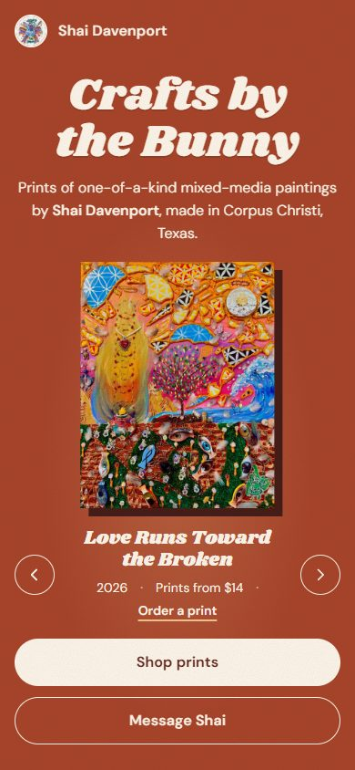
A spinning ring of her actual canvases with real depth. Swipe to turn it; the whole page takes on the color of the painting in front.
Open the mockup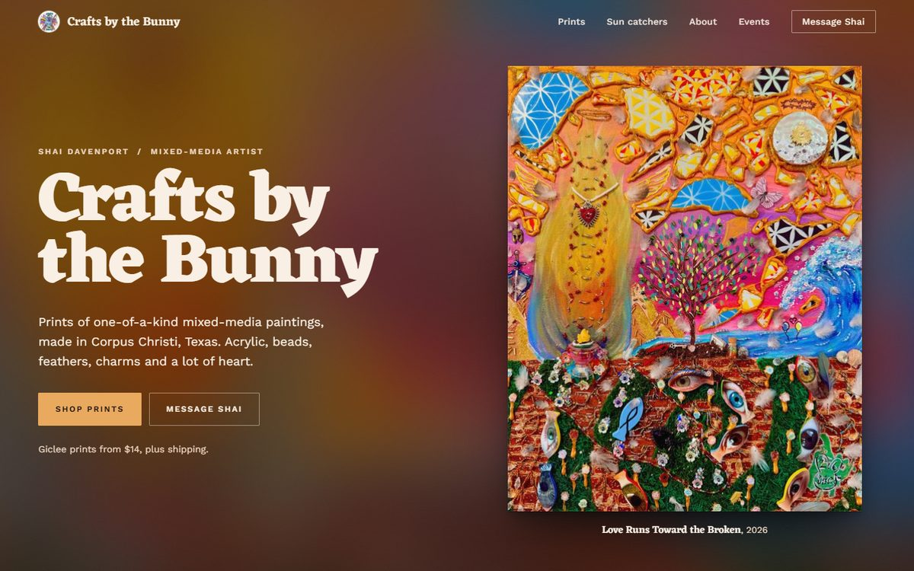
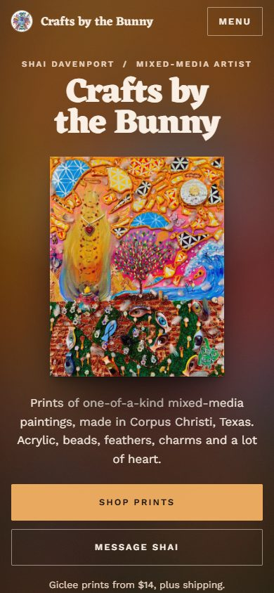
No 3D, fastest load. Each painting gets a full-screen room built from its own colors, and the page shifts palette as you scroll. Her "cool backgrounds with her art" idea, literally.
Open the mockup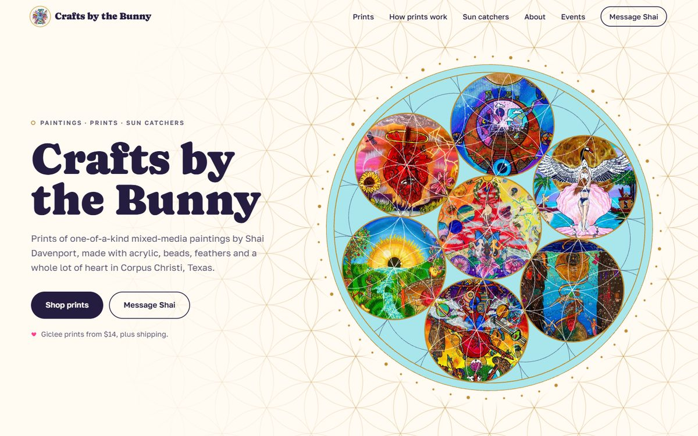
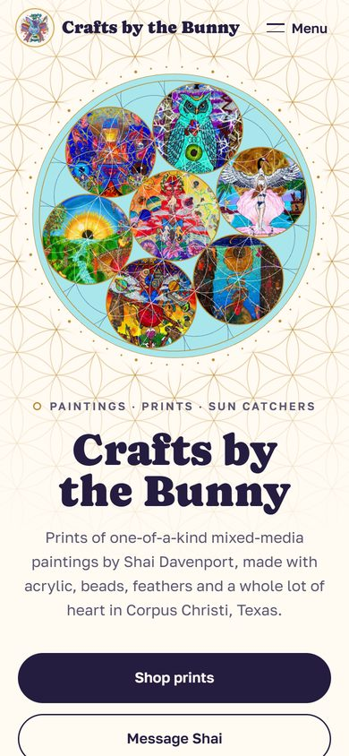
The flower-of-life pattern from her paintings draws itself in gold, with her work glowing inside the circles. Light and joyful in the turquoise and pink of her own graphics.
Open the mockup